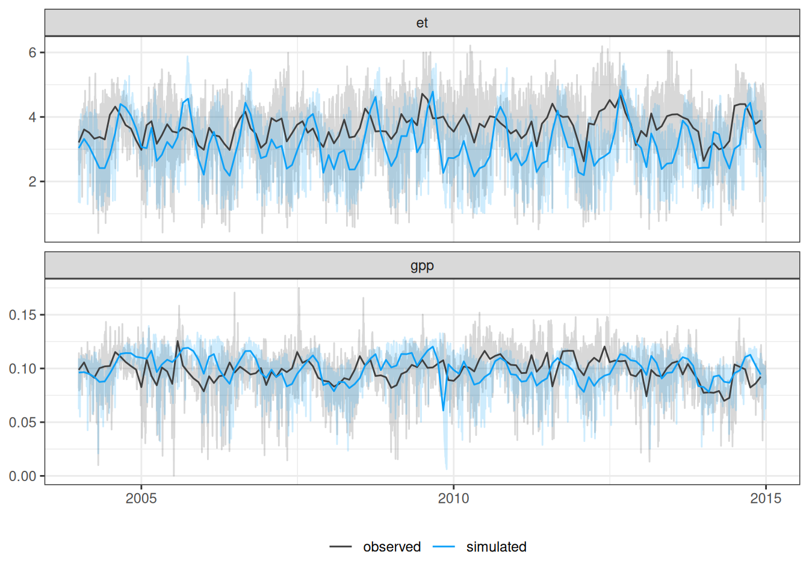

Code
x_pos <- "-52.95"
y_pos <- "4.65"
sim <- paste0("sim_", x_pos, "_", y_pos, "_R1")
dates <- tibble(date = seq(ymd('1425-01-01'),
ymd('2024-12-31'),
by = '1 day')) %>%
filter(paste0(month(date), "-", day(date)) != "2-29")
gpp <- file.path("simulations", "results0", "spinup", sim,
paste0(sim, "_0_sumstats.txt")) %>%
read_tsv() %>%
mutate(date = dates$date) %>%
filter(year(date) %in% 2004:2014) %>%
select(date, gpp)
et <- file.path("simulations", "results0", "spinup", sim,
paste0(sim, "_0_water_balance.txt")) %>%
read_tsv() %>%
mutate(date = dates$date) %>%
filter(year(date) %in% 2004:2014) %>%
mutate(et = (transpitation_0 + transpitation_1 + transpitation_2 +
transpitation_3 + transpitation_4 + evaporation +
(precipitation/1000-throughfall))*1000) %>%
select(date, et)
observed <- read_tsv("data/derived_data/guyaflux.tsv") %>%
gather(variable, observed, -time) %>%
group_by(variable, date = as_date(time)) %>%
summarise(observed = ifelse(variable == "gpp",
mean(observed),
sum(observed)
))
daily_var <- left_join(gpp, et) %>%
gather(variable, simulated, -date) %>%
left_join(observed) %>%
gather(type, value, -date, -variable)
monthly_var <- daily_var %>%
group_by(type, variable, date = floor_date(date, "month")) %>%
summarise(value = mean(value))
ggplot(daily_var, aes(date, value, col = type, fill = type)) +
geom_line(alpha = 0.2) +
geom_line(data = monthly_var) +
theme_bw() +
facet_wrap(~ variable, scales = "free_y", nrow = 2) +
theme(axis.title = element_blank()) +
theme(legend.position = "bottom") +
scale_color_manual("", values = as.vector(cols[c("obs", "sim")]))